2024 Higher Biology - Paper 1 questions
Source: Scottish Qualifications Authority (SQA) / Qualifications Scotland. This is a StemInteract HTML companion, not an official HTML edition. Selectable text is supplied alongside original page images. Use the images or original PDF for equations, powers, fractions, vector notation, tables and diagrams; text extraction cannot fully preserve mathematical layout.
Jump to a question
PDF page 1
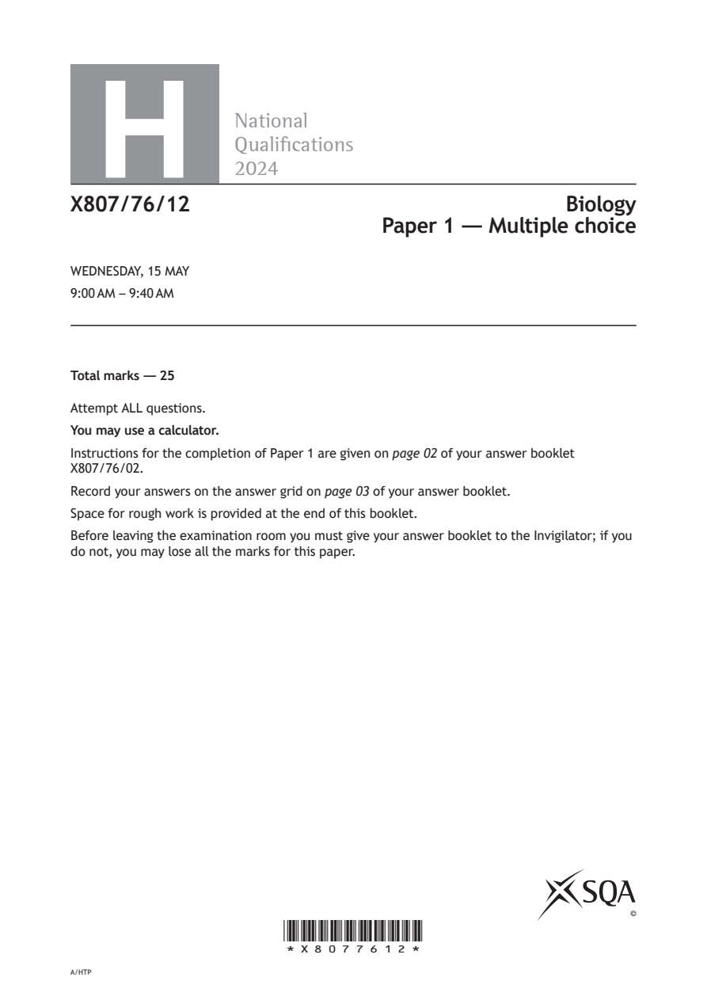
Selectable page text
H
National
Qualications
2024
X807/76/12 Biology
Paper 1 — Multiple choice
WEDNESDAY, 15 MAY
9:00 AM – 9:40 AM
Total marks — 25
Attempt ALL questions.
You may use a calculator.
Instructions for the completion of Paper 1 are given on page 02 of your answer booklet
X807/76/02.
Record your answers on the answer grid on page 03 of your answer booklet.
Space for rough work is provided at the end of this booklet.
Before leaving the examination room you must give your answer booklet to the Invigilator; if you
do not, you may lose all the marks for this paper.
©
*X8077612*
A/HTPPDF page 2
Paper 1, Question 1Paper 1, Question 2Paper 1, Question 3Paper 1, Question 4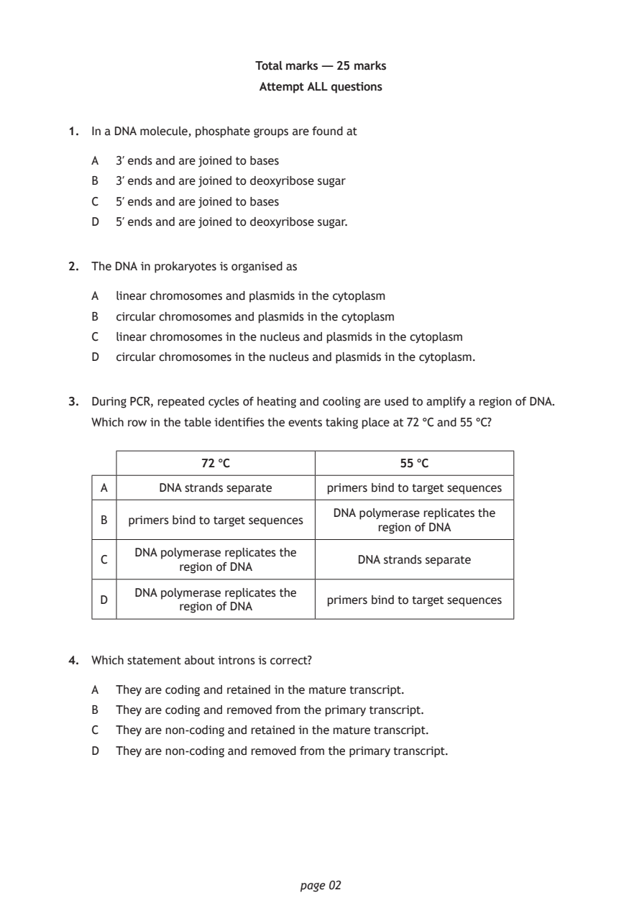
Selectable page text
Total marks — 25 marks
Attempt ALL questions
1. In a DNA molecule, phosphate groups are found at
A 3′ ends and are joined to bases
B 3′ ends and are joined to deoxyribose sugar
C 5′ ends and are joined to bases
D 5′ ends and are joined to deoxyribose sugar.
2. The DNA in prokaryotes is organised as
A linear chromosomes and plasmids in the cytoplasm
B circular chromosomes and plasmids in the cytoplasm
C linear chromosomes in the nucleus and plasmids in the cytoplasm
D circular chromosomes in the nucleus and plasmids in the cytoplasm.
3. During PCR, repeated cycles of heating and cooling are used to amplify a region of DNA.
Which row in the table identifies the events taking place at 72 °C and 55 °C?
72 °C 55 °C
A DNA strands separate primers bind to target sequences
DNA polymerase replicates the
B primers bind to target sequences
region of DNA
DNA polymerase replicates the
C DNA strands separate
region of DNA
DNA polymerase replicates the
D primers bind to target sequences
region of DNA
4. Which statement about introns is correct?
A They are coding and retained in the mature transcript.
B They are coding and removed from the primary transcript.
C They are non‑coding and retained in the mature transcript.
D They are non‑coding and removed from the primary transcript.
page 02PDF page 3
Paper 1, Question 5Paper 1, Question 6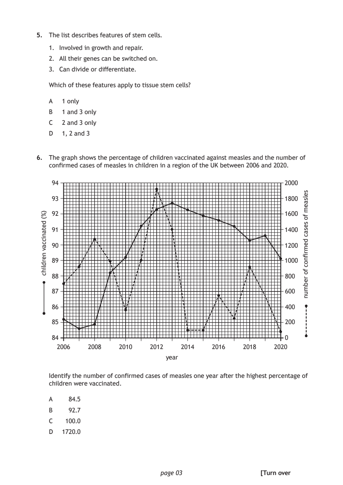
Selectable page text
5. The list describes features of stem cells.
1. Involved in growth and repair.
2. All their genes can be switched on.
3. Can divide or differentiate.
Which of these features apply to tissue stem cells?
A 1 only
B 1 and 3 only
C 2 and 3 only
D 1, 2 and 3
6. The graph shows the percentage of children vaccinated against measles and the number of
confirmed cases of measles in children in a region of the UK between 2006 and 2020.
94 2000
93 1800
92 1600
91 1400
90 1200
89 1000
88 800
87 600
86 400
85 200
84 0
2006 2008 2010
year
page 03
)%(
detaniccav
nerdlihc
selsaem
fo
sesac
demrfinoc
fo
rebmun
2012 2014 2016 2018 2020
Identify the number of confirmed cases of measles one year after the highest percentage of
children were vaccinated.
A 84.5
B 92.7
C 100.0
D 1720.0
[Turn overPDF page 4
Paper 1, Question 7Paper 1, Question 8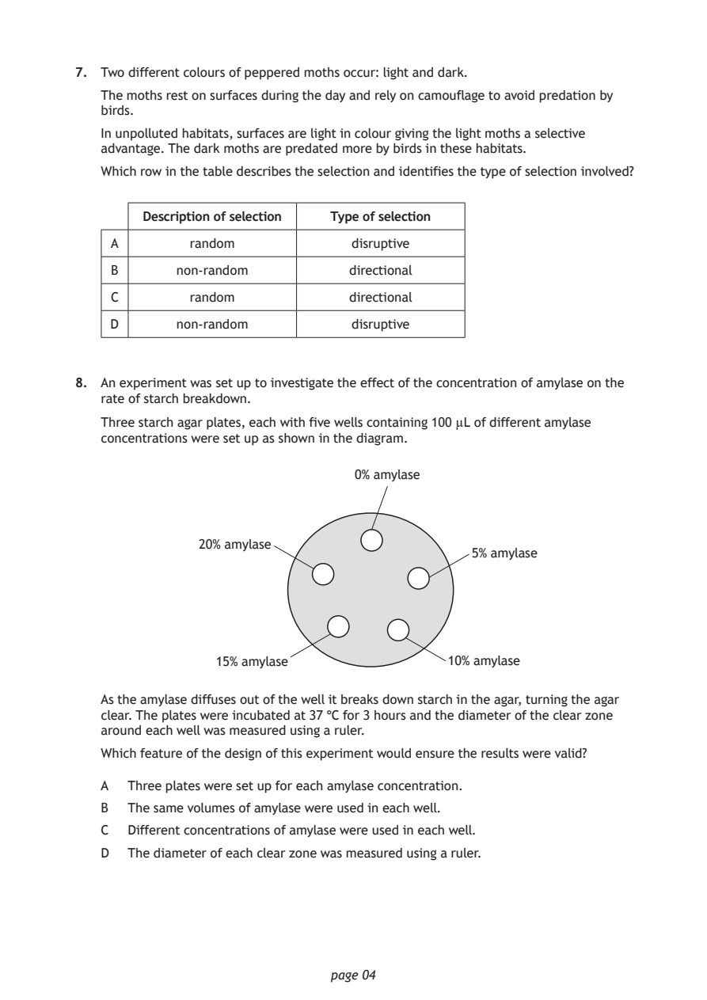
Selectable page text
7. Two different colours of peppered moths occur: light and dark.
The moths rest on surfaces during the day and rely on camouflage to avoid predation by
birds.
In unpolluted habitats, surfaces are light in colour giving the light moths a selective
advantage. The dark moths are predated more by birds in these habitats.
Which row in the table describes the selection and identifies the type of selection involved?
Description of selection Type of selection
A random disruptive
B non‑random directional
C random directional
D non‑random disruptive
8. An experiment was set up to investigate the effect of the concentration of amylase on the
rate of starch breakdown.
Three starch agar plates, each with five wells containing 100 µL of different amylase
concentrations were set up as shown in the diagram.
0% amylase
20% amylase
5% amylase
15% amylase 10% amylase
As the amylase diffuses out of the well it breaks down starch in the agar, turning the agar
clear. The plates were incubated at 37 °C for 3 hours and the diameter of the clear zone
around each well was measured using a ruler.
Which feature of the design of this experiment would ensure the results were valid?
A Three plates were set up for each amylase concentration.
B The same volumes of amylase were used in each well.
C Different concentrations of amylase were used in each well.
D The diameter of each clear zone was measured using a ruler.
page 04PDF page 5
Paper 1, Question 9Paper 1, Question 10Paper 1, Question 11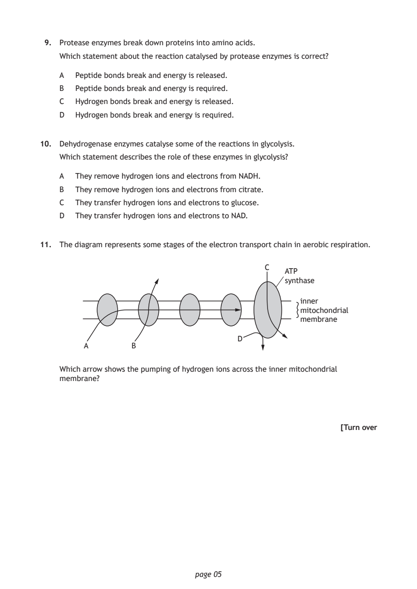
Selectable page text
9. Protease enzymes break down proteins into amino acids.
Which statement about the reaction catalysed by protease enzymes is correct?
A Peptide bonds break and energy is released.
B Peptide bonds break and energy is required.
C Hydrogen bonds break and energy is released.
D Hydrogen bonds break and energy is required.
10. Dehydrogenase enzymes catalyse some of the reactions in glycolysis.
Which statement describes the role of these enzymes in glycolysis?
A They remove hydrogen ions and electrons from NADH.
B They remove hydrogen ions and electrons from citrate.
C They transfer hydrogen ions and electrons to glucose.
D They transfer hydrogen ions and electrons to NAD.
11. The diagram represents some stages of the electron transport chain in aerobic respiration.
C
ATP
synthase
inner
mitochondrial
membrane
D
A B
Which arrow shows the pumping of hydrogen ions across the inner mitochondrial
membrane?
[Turn over
page 05PDF page 6
Paper 1, Question 12Paper 1, Question 13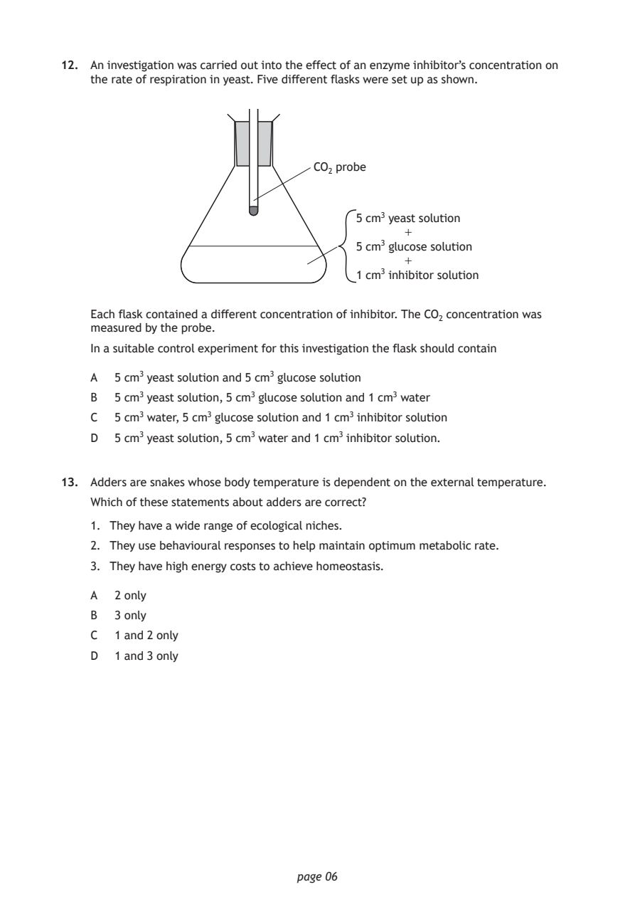
Selectable page text
12. An investigation was carried out into the effect of an enzyme inhibitor’s concentration on
the rate of respiration in yeast. Five different flasks were set up as shown.
CO₂ probe
5 cm³ yeast solution
+
5 cm³ glucose solution
+
1 cm³ inhibitor solution
Each flask contained a different concentration of inhibitor. The CO₂ concentration was
measured by the probe.
In a suitable control experiment for this investigation the flask should contain
A 5 cm³ yeast solution and 5 cm³ glucose solution
B 5 cm³ yeast solution, 5 cm³ glucose solution and 1 cm³ water
C 5 cm³ water, 5 cm³ glucose solution and 1 cm³ inhibitor solution
D 5 cm³ yeast solution, 5 cm³ water and 1 cm³ inhibitor solution.
13. Adders are snakes whose body temperature is dependent on the external temperature.
Which of these statements about adders are correct?
1. They have a wide range of ecological niches.
2. They use behavioural responses to help maintain optimum metabolic rate.
3. They have high energy costs to achieve homeostasis.
A 2 only
B 3 only
C 1 and 2 only
D 1 and 3 only
page 06PDF page 7
Paper 1, Question 14Paper 1, Question 15Paper 1, Question 16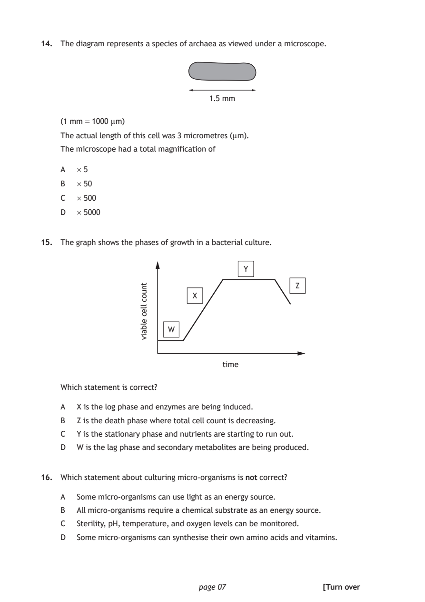
Selectable page text
14. The diagram represents a species of archaea as viewed under a microscope.
1.5 mm
(1 mm = 1000 µm)
The actual length of this cell was 3 micrometres (µm).
The microscope had a total magnification of
A × 5
B × 50
C × 500
D × 5000
15. The graph shows the phases of growth in a bacterial culture.
W
time
page 07
tnuoc
llec
elbaiv
Y
Z
X
Which statement is correct?
A X is the log phase and enzymes are being induced.
B Z is the death phase where total cell count is decreasing.
C Y is the stationary phase and nutrients are starting to run out.
D W is the lag phase and secondary metabolites are being produced.
16. Which statement about culturing micro‑organisms is not correct?
A Some micro‑organisms can use light as an energy source.
B All micro‑organisms require a chemical substrate as an energy source.
C Sterility, pH, temperature, and oxygen levels can be monitored.
D Some micro‑organisms can synthesise their own amino acids and vitamins.
[Turn overPDF page 8
Paper 1, Question 17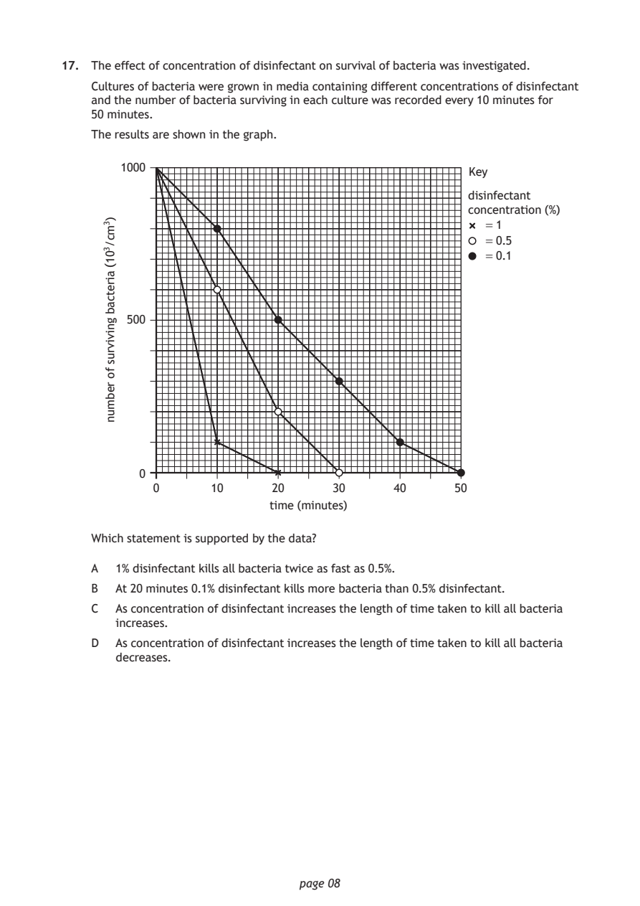
Selectable page text
17. The effect of concentration of disinfectant on survival of bacteria was investigated.
Cultures of bacteria were grown in media containing different concentrations of disinfectant
and the number of bacteria surviving in each culture was recorded every 10 minutes for
50 minutes.
The results are shown in the graph.
1000
disinfectant
concentration (%)
= 1
= 0.5
= 0.1
500
0
0 10 20 30
time (minutes)
page 08
)3mc/301(
airetcab
gnivivrus
fo
rebmun
Key
40 50
Which statement is supported by the data?
A 1% disinfectant kills all bacteria twice as fast as 0.5%.
B At 20 minutes 0.1% disinfectant kills more bacteria than 0.5% disinfectant.
C As concentration of disinfectant increases the length of time taken to kill all bacteria
increases.
D As concentration of disinfectant increases the length of time taken to kill all bacteria
decreases.PDF page 9
Paper 1, Question 18Paper 1, Question 19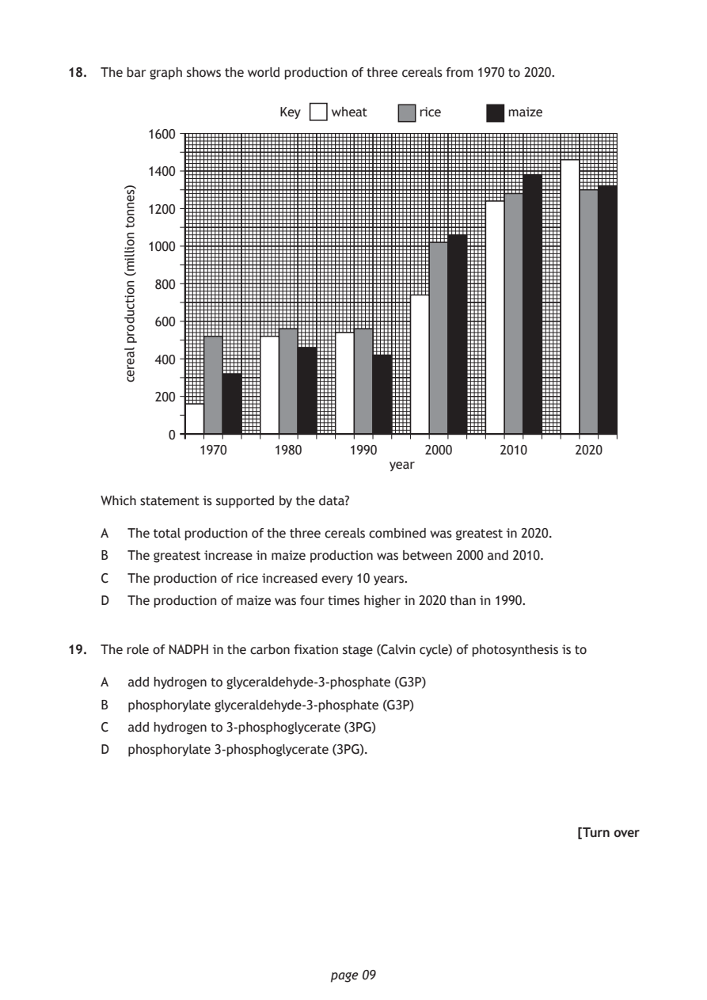
Selectable page text
18. The bar graph shows the world production of three cereals from 1970 to 2020.
year
page 09
)sennot
noillim(
noitcudorp
laerec
Key wheat rice maize
1600
1400
1200
1000
800
600
400
200
0
1970 1980 1990 2000 2010 2020
Which statement is supported by the data?
A The total production of the three cereals combined was greatest in 2020.
B The greatest increase in maize production was between 2000 and 2010.
C The production of rice increased every 10 years.
D The production of maize was four times higher in 2020 than in 1990.
19. The role of NADPH in the carbon fixation stage (Calvin cycle) of photosynthesis is to
A add hydrogen to glyceraldehyde‑3‑phosphate (G3P)
B phosphorylate glyceraldehyde‑3‑phosphate (G3P)
C add hydrogen to 3‑phosphoglycerate (3PG)
D phosphorylate 3‑phosphoglycerate (3PG).
[Turn overPDF page 10
Paper 1, Question 20Paper 1, Question 21Paper 1, Question 22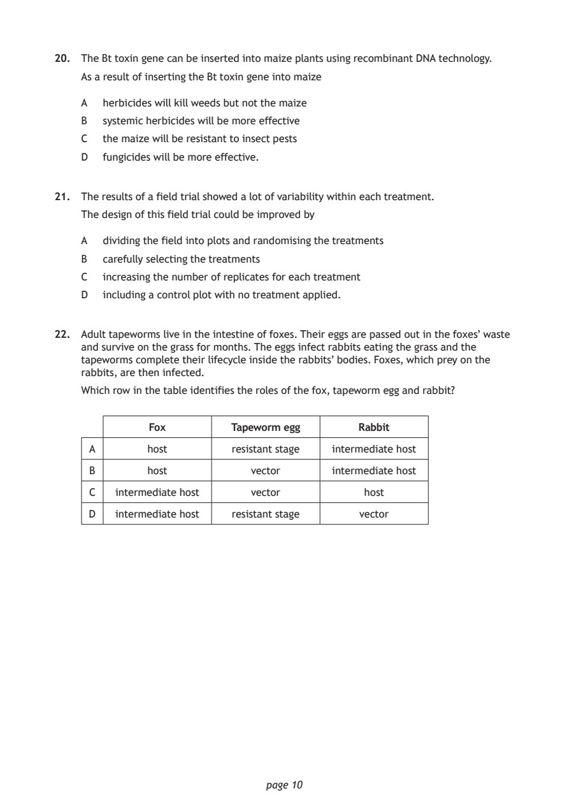
Selectable page text
20. The Bt toxin gene can be inserted into maize plants using recombinant DNA technology.
As a result of inserting the Bt toxin gene into maize
A herbicides will kill weeds but not the maize
B systemic herbicides will be more effective
C the maize will be resistant to insect pests
D fungicides will be more effective.
21. The results of a field trial showed a lot of variability within each treatment.
The design of this field trial could be improved by
A dividing the field into plots and randomising the treatments
B carefully selecting the treatments
C increasing the number of replicates for each treatment
D including a control plot with no treatment applied.
22. Adult tapeworms live in the intestine of foxes. Their eggs are passed out in the foxes’ waste
and survive on the grass for months. The eggs infect rabbits eating the grass and the
tapeworms complete their lifecycle inside the rabbits’ bodies. Foxes, which prey on the
rabbits, are then infected.
Which row in the table identifies the roles of the fox, tapeworm egg and rabbit?
Fox Tapeworm egg Rabbit
A host resistant stage intermediate host
B host vector intermediate host
C intermediate host vector host
D intermediate host resistant stage vector
page 10PDF page 11
Paper 1, Question 23Paper 1, Question 24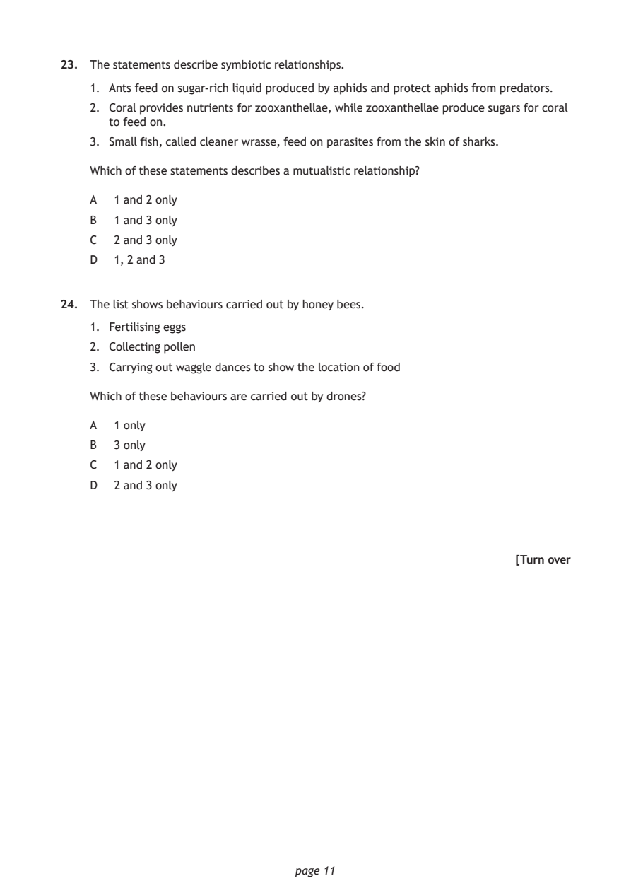
Selectable page text
23. The statements describe symbiotic relationships.
1. Ants feed on sugar‑rich liquid produced by aphids and protect aphids from predators.
2. Coral provides nutrients for zooxanthellae, while zooxanthellae produce sugars for coral
to feed on.
3. Small fish, called cleaner wrasse, feed on parasites from the skin of sharks.
Which of these statements describes a mutualistic relationship?
A 1 and 2 only
B 1 and 3 only
C 2 and 3 only
D 1, 2 and 3
24. The list shows behaviours carried out by honey bees.
1. Fertilising eggs
2. Collecting pollen
3. Carrying out waggle dances to show the location of food
Which of these behaviours are carried out by drones?
A 1 only
B 3 only
C 1 and 2 only
D 2 and 3 only
[Turn over
page 11PDF page 12
Paper 1, Question 25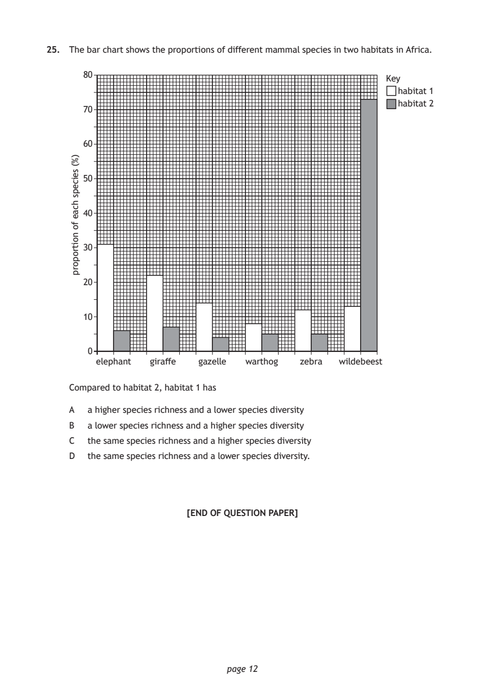
Selectable page text
25. The bar chart shows the proportions of different mammal species in two habitats in Africa.
80
Key
habitat 1
habitat 2
70
60
50
40
30
20
10
0
elephant giraffe gazelle warthog zebra wildebeest
page 12
)%(
seiceps
hcae
fo
noitroporp
Compared to habitat 2, habitat 1 has
A a higher species richness and a lower species diversity
B a lower species richness and a higher species diversity
C the same species richness and a higher species diversity
D the same species richness and a lower species diversity.
[END OF QUESTION PAPER]PDF page 13

Selectable page text
SPACE FOR ROUGH WORK
page 13PDF page 14

Selectable page text
SPACE FOR ROUGH WORK
page 14PDF page 15

Selectable page text
[BLANK PAGE]
DO NOT WRITE ON THIS PAGE
page 15PDF page 16

Selectable page text
[BLANK PAGE]
DO NOT WRITE ON THIS PAGE
page 16